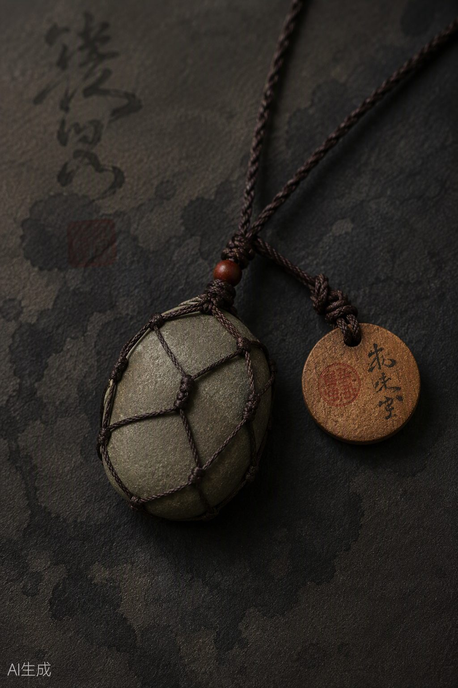
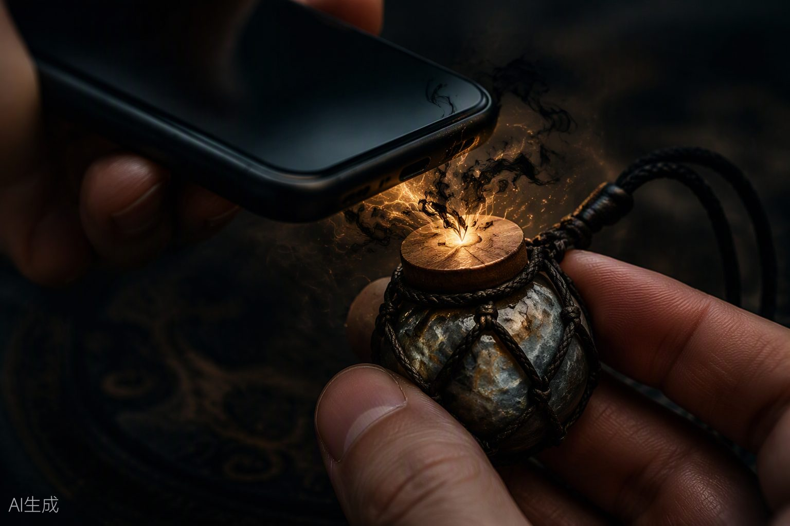

JING · THE 36,501ST · 首发系列
Every stone has a jing. Tap to wake it.
一块雅安河石，经过三道手工，配一枚藏着 NFC 芯片的木牌。它是可戴的水晶 × 可抽的神谕卡 × 护身符项链，叠成一块会说话的守护石——唤醒之后，每天跟你说一句话。
预售 $29 / ¥69 · 正式价 $34 / ¥89 · 免下载网页，不做 App

雅安河石 · 手编绳网 · NFC 木牌出身 · Origin
《红楼梦》第一回，女娲炼了三万六千五百零一块石头补天，只用了三万六千五百块——剩下一块。每一块成精石，都是"被剩下的那一块"。
怎么用 · How it reads
「点」，是手机碰一下石头；「成精」，是石中之精醒来。英文品牌 JING，首发系列就叫 The 36,501st。
开箱时棉布袋里只有一块石头和一张牛皮纸卡，上面写着一句话——
"先别起名，
碰一下叫醒它。"
构成 · What's inside
壹 / STONE
2.5–4 cm，扁圆或微异形。不看纯度，只挑有一处能讲出来的特征的：一道纹、一个孔、一块杂色。杂质即人味。
贰 / KNOT
蜡绳编成网兜包住石头，不打孔、不镶嵌。木牌背面写上编绳手艺人的名字——"由某某编"。
叁 / TAG
木质 NFC 标签，写入专属网址后锁定。手写编号和五行字，盖一方朱砂小印。碰一下，打开一个免下载的网页。
预售 $29 / ¥69 $34 / ¥89
原色棉布袋包装 · 牛皮纸卡 · 线上部分免下载

点化 · 一辈子只有一次，最长 60 秒
唤醒 · Awakening
墨水晕开，一声清脆的真石敲击，石精睁眼，说出自己的名字和来历。
"很久以前天裂了，我做了 36501 块石头去补，只剩一块没用上。它一直在等你。碰碰它吧。"
你的名字，和一件心事。然后发给你一张石籍卡——这块石头的身份档案。
早上碰一下得一句话，配一小段吟诵；睡前碰一下写一件心事，第二天早上拆开回信。
声音 · Two voices
神的话预制，精的话生成。
预制 · 约 20 句 · 不让 AI 临场发挥
很老的长辈：话少、温和，展现神性。
AI 按这块石头的人设开口 · 边界由我们定
睡了很久、刚醒的朋友：直、温和、有点笨拙。
颜色是信念 · Five elements
五行出自《尚书·洪范》，吟诵调式按《礼记·月令》。木火土金水，各有自己的一段调子。
| 五行 | 石色 | 信念 | 给海外用户的一句话 | 雅安对应石头 |
|---|---|---|---|---|
| 木 GROWTH | 青、绿 | 生长与希望 | 它记得自己曾是一座山的呼吸 | 绿色花岗石 |
| 火 COURAGE | 赤、红 | 热忱与勇气 | 地心里滚出来的一小块心 | 中国红、石棉红 |
| 土 GROUNDING | 黄、褐 | 包容与安定 | 大地亲手接住的那一部分 | 黄褐色河石 |
| 金 CLARITY | 白、金属光泽 | 决断与取舍 | 被时间削掉多余的一块 | 宝兴汉白玉 |
| 水 STILLNESS | 黑、深蓝 | 智慧与沉静 | 山海替它做过一万次冥想 | 黑色花岗石 |
造型是心境 · 25 spirits
每块石头发货前定好人设，人工过目。AI 写人设时以这 25 格为准。
底层信念 · Beliefs
缺一块，也是一整块石头。
补天剩下的顽石 · 《红楼梦》第一回Missing a piece is still a whole stone.
我碎过很多次，碎完还是我。
石破天惊逗秋雨 · 李贺；启母石裂而生启I have broken many times. Still me.
今天往心里放一样好东西。
太湖石的"漏""透"：空处也是它Put one good thing inside you today.
你拿到的是起点，不是结局。
《左传·僖公十六年》叔兴："吉凶由人"What you were given is a start, not an ending.
照你本来的样子走。
《中庸》："天命之谓性，率性之谓道"Walk the way you were made.
神石谱 · The Canon
每块石头的身世、守护典故和每天一句，都从这份谱里取。每条原文都打开原文页面核对过——引古书只用核对过的原文，不许 AI 自己编。
石头从哪来 · 女娲台词、每块石头的身世
"女娲炼五色石以补苍天"《淮南子·览冥训》
石头里装着天地 · "成精"最硬的出处
"天地至精之气，结而为石"《云林石谱》孔传序（据转引）
石头里生出生命 · 点化动画"石纹裂开"的依据
"感之既久，遂有灵通之意"《西游记》第一回 · 花果山仙石
石头会被点醒、会听、会说
"石不能言最可人"陆游《闲居自述》 · 精的原则：一天只说一句
石头会响 · 吟诵与碰石声音设计、雨天彩蛋
"水石相搏，声如洪钟"苏轼《石钟山记》
石头替你守住的东西 · 今日一谕的主矿脉
"石可破也，而不可夺坚"《吕氏春秋·诚廉》
普通的石头被郑重对待 · 诚实回应"智商税"质疑
"藏之愈固，守之弥坚"《阙子》燕石（据转引） · 石头普通，珍惜不普通
石头择主、为师、守约 · 转赠与长期陪伴
"此石能自择主"蒲松龄《聊斋志异·石清虚》
挡在你前面的石头 · 只讲勇气，不宣称辟邪
"师猛虎，石敢当，所不侵"史游《急就篇》
玩法 · Roadmap
第一次碰，石头醒来。一辈子只有一次，最长 60 秒，可跳过。
拍一张自己捡的石头，30 秒动画看它"醒来"。零库存引流、测传播，每台手机每天限 3 次。
早上碰一下，3 秒内出现今天的一句话 + 一小段吟诵 + 一行结合你心事的悄悄话。点"为什么"看古籍出处。
打字问一件事，石精按人设回答，最后一定给一件今天能做的小事。每天最多问 3 次。
点化后拿到的身份卡：名字、属性、脾气、来历、第一句话、真的身世、守护典故、编绳人。
竖版手机尺寸，中间是石头真实照片，配今天那句话和编号，角落标明"AI 辅助生成"。
在河滩录下雅安石头互敲的声音，顺手拍成短视频——冷启动内容，成本近乎为零。
睡前写一件心事，信封封上"今晚我替你想"，第二天早上 6 点以后才能拆开回信。
每周日一封邮件，像章回小说："第三回：你问要不要走，石头说慢慢拐弯，别跳。"
每天那句话排成一本编年史。只记"第几次相见"，断了不提醒、不扣分。
木牌刻名字或日期，加 $8，适合送礼。首批可先用手写代替。
只卖手编绳和 NFC 木牌，给你自己捡的石头穿上。最轻、最便宜，国际运费最低。
石头连同它的石头记一起送人，做账号迁移。
每月新卡面、新吟诵，数字内容几乎零边际成本。
五色凑一套；春分、夏至、秋分、冬至出限定神谕。
一天连碰三次，花果山的石猴出来打个招呼（《西游记》第一回）。
边界 · Boundaries
碰一下，读一句，点"为什么"看典故。给一个今天能做的动作，不预言、不断吉凶。
不给看病、法律、投资建议，不说转运、招财、开光。只讲勇气，不宣称辟邪。
引古书只用核对过的原文，不许 AI 自己编。存疑的出处标"据转引"或"待校对"。
页面一直标明"你在和 AI 说话"，不扮演恋人。有人流露想伤害自己时停止扮演。只给 18 岁以上的人用（待定）。
出海与国内 · Go to market
OVERSEAS · JING
CHINA · 点石成精
海外 · 30 天
海外 · 30 天
国内 · 30 天
国内首批买家
两条线都达标，才进入下一阶段。文中成本、价格、转化率均为估算，还没有询价或验证。待讨论：是否从众筹开始。